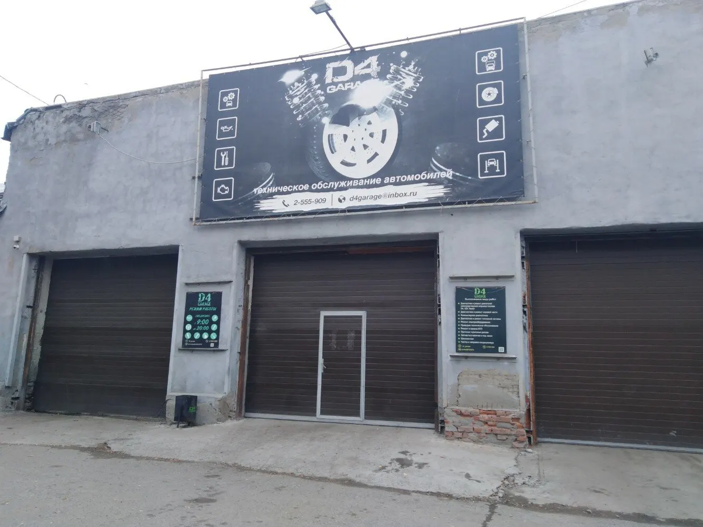
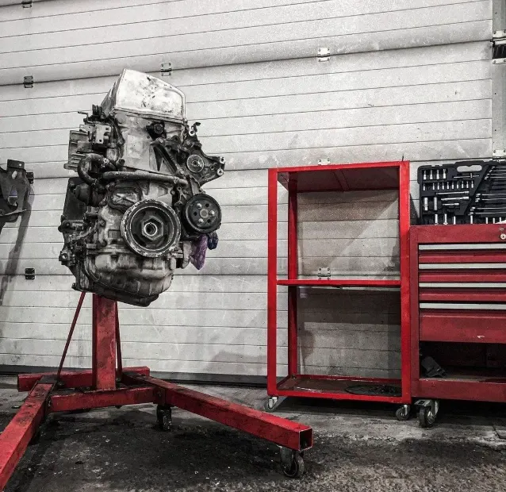
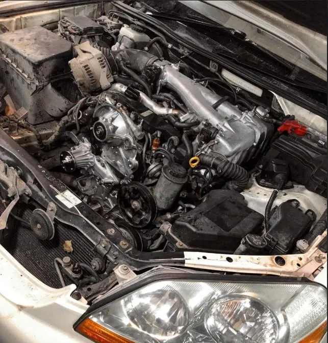
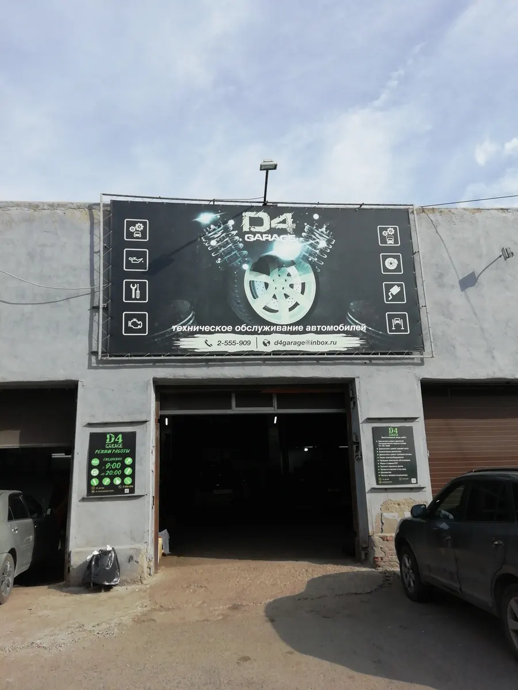

Моторы D4, GDI, NeoDi · ремонт и ТО по записи
D4 serviceРемонт моторов D4, GDI и NeoDi: диагностика по записи
Моторы, ходовая, электрика и ТО. Показываем, что нашли, и согласуем работы до начала.
- Специализация – моторы D4, GDI, NeoDi
- Показываем и объясняем, что нашли
- Запись на конкретное время

Что входит в визит
Входит
- Диагностика в назначенное время
- Объясняем, что с машиной и что можно сделать проще
- Подсказываем по запчастям, как лучше сделать
- Звонок, если что-то всплыло по ходу
Отдельно, если нужно
- Запчасти – в наличии и под заказ
- Нетиповые работы – оценка на диагностике
Работы и цены
Цены на типовые работы называем при записи по марке и году. Список – с таблички у входа.
Двигатель и электроника
- Диагностика и ремонт моторов D4, GDI, NeoDiнепосредственный впрыскуточнить
- Компьютерная диагностикауточнить
- Диагностика и ремонт топливной системыуточнить
- Ремонт электрооборудованияуточнить
Шасси и обслуживание
- Диагностика и ремонт ходовой частиуточнить
- Техническое обслуживаниеуточнить
- Ремонт и замена КППуточнить
- Проточка тормозных дисковуточнить
- Чистка и заправка кондиционерауточнить
- Шиномонтажуточнить
Запчасти есть в наличии и под заказ. Нетиповую работу оцениваем на диагностике.
Четыре шага, и на каждом – ваше «да»
- 01
Записались на время
Пишете марку, год и что беспокоит. Приехали – машина сразу в бокс.
- 02
Показываем и объясняем
Что нашли, что срочно, что подождёт.
- 03
Согласуем работы
Делаем только то, на что вы сказали «да».
- 04
Выдача
Забираете машину, мы рассказываем, что сделано.



Как мы работаем
Объясняем, а не пугаем
Показываем, что нашли, и говорим, можно ли проще.
Подсказываем по запчастям
Какие поставить – обсуждаем, решение за вами.
Работаем по записи
Выбираете день и время в форме выше и приезжаете к назначенному часу.
Отзывы с Яндекс.Карт
«Ребята профессионалы. Выявили проблему, разъяснили и объяснили проблему. Устранили проблему. Рекомендую»
Дмитрий З. · 8 августа 2025
«Отличный сервис, парни всегда подскажут как лучше сделать,какие запчасти поставить, всегда четко ,не первый год у них обслуживаю автомобиль»
Александр Васильевич Чивиленко · 19 февраля 2025
«Ребята молодцы качественно подошли к работе единственная станция где быстро определили и устранили неисправность двигателя большое спасибо рекомендую не пожалеете и цена адекватная»
Александр К. · 13 апреля 2023
Отзывы с карточки на Яндекс.Картах, без правок.
Частые вопросы
С какими моторами работаете?
Специализация – моторы D4, GDI и NeoDi. Также японские и европейские легковые, грузовые, Hyundai.
Можно выбрать запчасти самому?
Подскажем, какие поставить и как лучше сделать. Запчасти есть в наличии и под заказ.
А если найдёте что-то ещё?
Расскажем и согласуем с вами, прежде чем делать.
Запишитесь на диагностику на удобное время
- Адрес
- Серебренниковская ул., 5, корп. 1, Новосибирск
- Часы
- пн–пт 09:00–20:00, сб и вс выходной
- Телефон
- +7 (383) 255-59-09